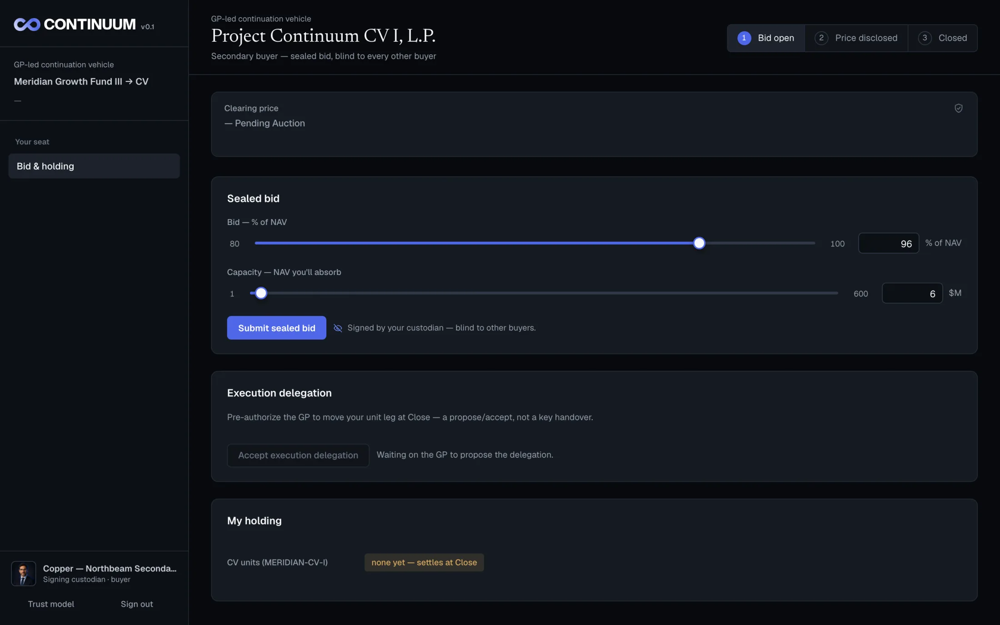
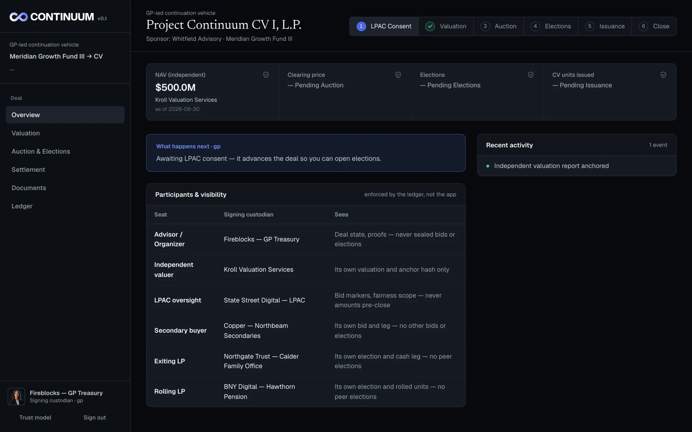

We help secondary advisors and fund administrators run continuation-fund closes and settle them in a single atomic transaction.
02 The transaction
03 The structure
The process relies on independent checks so the price and terms don't depend on the conflicted party.
04 The problem
Every check assumes the GP's coordination is neutral.
05 The solution
Native to Canton: sub-transaction privacy · atomic settlement · selective disclosure · no central operator.
06 Demo


07 How it works
Open the room — six parties, each with its own key.
Valuation anchored on-chain.
Sealed-bid auction, clearing price, certificate.
LPAC fairness review and consent.
LP elections — cash or roll.
Atomic close — units, cash, rolled interests settle together, or not at all.
08 How it works
Each view is the ledger's projection of the same nine Daml contracts — Deal · Valuation · Auction · Consent · Election · Clearing · Issuance · Settlement · Registry.
09 Next steps
Continuation deals are the wedge; the pattern is the same each time.
10 Team
Team
Kirill Madorin
Full-stack · JavaScript · Rust
@kmadorin
Artem Bryzgalov
Product design · UI/UX
@abrizgalov
Advisor
Kenji Watanabe
Advisor · Partner at a venture fund
A secure closing room for GP-led continuation deals — private commitments, four on-ledger proofs, one atomic close on Canton.
A1 Appendix
A signatory authorizes the contract; an observer sees it; everyone else's node never receives it.
A2 Appendix
A3 Appendix
Canton has no contract addresses. Code is a package id, contract types are template ids, participants are party ids, and the close is the update id of its transaction.